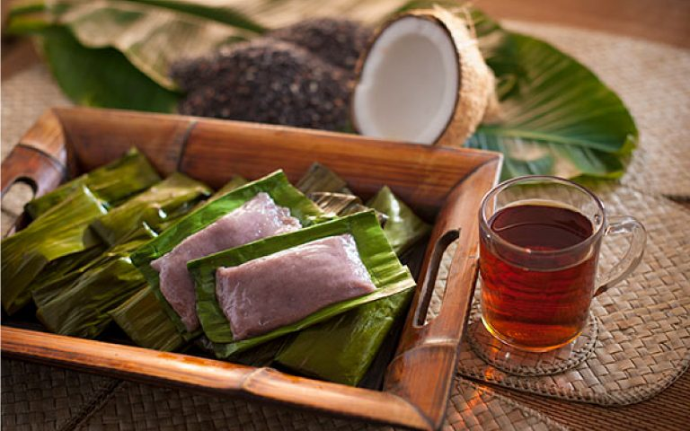

Hinompuka (Steamed Glutinous Rice Cake)
.
Ingredients
- Beras Pulut (Glutinous Rice)
- Rice Flour
- Black Rice Flour
- Palm sugar or Gula Melaka
- Irik leaf (cut to 8 inches)
Steps
- Mix the glutinous rice, palm sugar and water together (Ensure it is not too diluted)
- Prepare and clean the Irik leaf
- Wrap the mixture that has been prepared
- Steam the Hinompuka in a steamer for 30 - 40 minutes
- Serve it either hot or cold